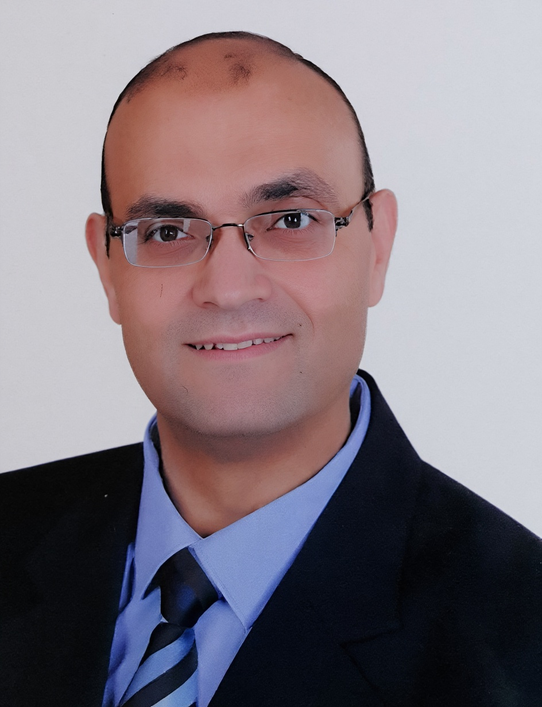

Dr. Emadeldin Mohammad Elsokkary
Faculty Member, Department of Psychology, College of Social Sciences, Imam Mohammad Ibn Saud Islamic University; and Department of Educational Psychology, Faculty of Education, Menoufia University
Psychometrics · Applied Statistics · Digital Psychology
About
Faculty member in the Department of Psychology, College of Social Sciences, Imam Mohammad Ibn Saud Islamic University, Riyadh, and in the Department of Educational Psychology, Faculty of Education, Menoufia University, Egypt. I specialize in educational psychology, psychological and educational measurement, applied statistics, and advanced statistical modeling.
I began my academic career at Menoufia University in 1997, earned my PhD in Educational Psychology in 2004, and have been at Imam University since 2010. I was a Visiting Scholar at the College of Social Sciences, University of Minnesota, USA, in 2009.
My recent research focuses on digital psychology, digital well-being, and problematic digital behaviors, with publications in PLOS ONE, Scientific Reports, Behavioral Sciences, and Frontiers in Public Health.
Research
Current interests
- Digital psychology
- Digital well-being
- Digital mindfulness
- Problematic digital behaviors
- Internet gaming disorder
- Doomscrolling & social media
- Psychological effects of AI
- Human–AI interaction
Areas of specialization
- Educational & cognitive psychology
- Positive psychology
- Psychological measurement
- Scale development & validation
- Individual differences & thinking
- Mental health & quality of life
International journal articles (21)
- Aldali, J. A., Elsokkary, E. M., Alnajdi, G., Maghrabi, M., Subh, R., Alakkasi, G., Yati, S. A., & Alzakari, M. (2026). Adverse events of herpes zoster vaccination among adults in Saudi Arabia: A cross-sectional study. PLOS ONE, 21(10), e0360528. https://doi.org/10.1371/journal.pone.0360528 · PDF
- Elsokkary, E. M. (2026). Digital Mindfulness and Digital Well-Being Among University Students: The Mediating Role of Fear of Missing Out. Behavioral Sciences, 16(11), 1964. https://doi.org/10.3390/bs16111964 · PDF
- Elsokkary, E. M. (2026). Psychometric Validation of the Arabic Doomscrolling Scale Among Saudi Young-Adult Social Media Users: Factor Structure, Measurement Invariance Across Gender, and Digital Correlates. Behavioral Sciences, 16(9), 1528. https://doi.org/10.3390/bs16091528 · PDF
- Elsokkary, E. M. (2026). Psychometric properties of the Arabic Perceived Digital Well-Being Scale (PDWS) in Saudi young adults. PLOS ONE, 21(7), e0354474. https://doi.org/10.1371/journal.pone.0354474 · PDF
- Yamani, I. A. J., Al-Krenawi, A., Kaseem, A. E. A. E., Meiri, E. A. F., Elsokkary, E. M., Mahgoub, E., Patel, D. V., & Abo Hamza, E. G. (2026). Cognitive Distortions and Alexithymia: A Cross-Sectional Study of Their Association. Healthcare, 14(14), 2205. https://doi.org/10.3390/healthcare14142205 · PDF
- Elsokkary, E. M., Aldali, J. A., AlQarni, M. B., AlAhmari, Y. A., Alghamdi, A. S., Almodara, D. N., & Alfandi, A. K. (2026). Internet Gaming Disorder, Sleep Quality, and Gaming Time Among High School and University Students in Saudi Arabia. Healthcare, 14(10), 1348. https://doi.org/10.3390/healthcare14101348 · PDF
- Elsokkary, E. M., Kaseem, A. E. A. E., & Alnamlah, A. S. (2026). The Moderating and Mediating Role of Psychological Resilience in the Relationship Between Borderline Personality Symptoms and Suicidal Ideation Among University Students. European Journal of Investigation in Health, Psychology and Education, 16(4), 53. https://doi.org/10.3390/ejihpe16040053 · PDF
- Meiri, E. A. F., Elsokkary, E. M., Kaseem, A. E. A. E., & Alrowily, H. L. (2026). Reflective thinking and problem-solving skills among university students: Levels, group differences, and associations. Scientific Culture, 12(2.1), 11735–11743. https://doi.org/10.5281/zenodo.20238568 · PDF
- Elsokkary, E. M., Kaseem, A. E. A. E., Alshihri, S. S., & Alghadyan, S. A. (2026). Academic Identity Statuses in Relation to Academic Self-Handicapping among Undergraduates: Group Differences and Relative Contributions. Scientific Culture, 12(2.1). https://doi.org/10.5281/zenodo.20008170 · PDF
- Kaseem, A. E. A. E., Ismail, R. M., Elsokkary, E. M., & Alnamlah, A. S. (2026). Interpersonal Counseling (IPC) For Improving Social Skills Among Preparatory School Students With Dyslexia. Scientific Culture, 12(2.1), 6245–6250. https://doi.org/10.5281/zenodo.19475401 · PDF
- Aldali, R. J., Elsokkary, E. M., Almousa, H. B., Alzahrani, Y. H., Elsokkary, H. E., & Aldali, J. A. (2026). Knowledge, attitude, and practice of self-medication among adults in the central region of Saudi Arabia: a cross-sectional study. Frontiers in Public Health, 14, 1802800. https://doi.org/10.3389/fpubh.2026.1802800 · PDF
- Alotaibi, B. A., Elsokkary, E. M., Aldali, J. A., ALdali, A. Z., Alshewaier, S., Aldali, T. A., & Alotaibi, N. (2026). Caregiver Burden and Depression among Families of Children with Disability: A Cross-Sectional Study in Riyadh. Hail Journal of Health Sciences. https://doi.org/10.4103/hjhs.hjhs_72_25 · PDF
- Elsokkary, E. M., Alsabhan, F. A., Alyahya, A. A., Alsahli, S. A., Almousa, A. M., Aldali, J. A., & Alasiri, G. (2025). Exploring the effect of nicotine pouches on users’ health in Saudi Arabia: A cross-sectional study. Tobacco Induced Diseases, 23(May), 60. https://doi.org/10.18332/tid/203510 · PDF
- Kaseem, A. E. A. E., Elsokkary, E. M., Meiri, E. A. F., Alshihri, S. S., & Mohamed, A. M. A. (2025). Childhood Abuse Experience Scale: Examining its Factor Structure using Item Confirmatory & Exploratory Factor Analyses among a Sample of Saudi Adolescents. International Journal of Innovative Research and Scientific Studies, 8(3), 1759–1769. https://doi.org/10.53894/ijirss.v8i3.6884 · PDF
- Alhawiti, N. M., Elsokkary, E. M., Aldali, J. A., & Alotaibi, B. A. (2025). Investigating the impact of glycated hemoglobin levels on stroke severity in patients with acute ischemic stroke. Scientific Reports, 15, 12114. https://doi.org/10.1038/s41598-025-95305-2 · PDF
- Aldali, J. A., Aljehani, A. M., Elsokkary, E. M., Alkhamis, F. L., Bin Khathlan, N. M., Alhadban, H. H., & Alkhathlan, H. K. (2024). Assessment of Knowledge, Attitude, and Preventive Behavior Regarding Toxoplasmosis among Females in Riyadh, Saudi Arabia: A Cross-Sectional Study. International Journal of Environmental Research and Public Health, 21(8), 1065. https://doi.org/10.3390/ijerph21081065 · PDF
- Aldali, J. A., Alahmari, S. A., AlMezyed, A. O., Alshammari, N. S. D., & Elsokkary, E. M. (2023). Multidrug-Resistant Staphylococcus capitis: An Emerging Challenge in Clinical Settings Found in Adult Patients in Saudi Arabia. Journal of Pure and Applied Microbiology, 17(3), 1836–1845. https://doi.org/10.22207/JPAM.17.3.48 · PDF
- Aldali, H. J., Khan, A., Alshehri, A. A., Aldali, J. A., Meo, S. A., Hindi, A., & Elsokkary, E. M. (2023). Hospital-Acquired Infections Caused by Carbapenem-Resistant Enterobacteriaceae: An Observational Study. Microorganisms, 11(6), 1595. https://doi.org/10.3390/microorganisms11061595 · PDF
- Alotaibi, B. A., Aldali, J. A., Aldali, H. J., Alasiri, G. A., Elsokkary, E. M., Al Mugairi, A., & Almuqrin, A. M. (2023). Risk Factors for Glucose 6-Phosphate Dehydrogenase and COVID-19 Disease—A Retrospective Study at a Major Saudi Tertiary Center. Viruses, 15(6), 1224. https://doi.org/10.3390/v15061224 · PDF
- Alotaibi, B. A., Aldali, J. A., Aldali, H. J., Meo, S. A., Alasiri, G. A., Elsokkary, E. M., Alotaibi, N. D., & Alotaibi, F. (2023). The Risk Factors for Acute Cerebrovascular Accident (Stroke) in Patients with Severe Acute Respiratory Syndrome Coronavirus (SARS-CoV-2). Viruses, 15(5), 1140. https://doi.org/10.3390/v15051140 · PDF
- Aldali, H. J., Aldali, J. A., Alotaibi, B. A., Alasiri, G. A., Alromih, A. M., Elsokkary, E. M., Aldali, A. Z., & Almeziny, A. (2023). Evaluating the Adverse Events Associated with Three Doses of the COVID-19 Vaccination in Adults in the Western Region of Saudi Arabia: A Cross-Sectional Study. Vaccines, 11(2), 266. https://doi.org/10.3390/vaccines11020266 · PDF
Arabic journal articles (10)
Listed in their original Arabic.
- السكري، عماد الدين محمد عبد الرحمن، وسالم، السعيد عبد الخالق عبد المعطي. (٢٠٢٤). الدور المعدل لسمة الانفتاح على الخبرة في العلاقة بين الاتجاه نحو العولمة وأزمة الهوية الثقافية لدى طلبة الجامعة. المجلة المصرية للدراسات النفسية، ٣٤(١٢٣)، ٢٨٩–٣٦٦. https://doi.org/10.21608/ejcj.2024.352174 · PDF
- السكري، عماد الدين محمد عبد الرحمن، والحربي، خالد بن بندر الزهيري. (٢٠٢٣). النموذج البنائي للعلاقات السببية بين الاحتراق النفسي وكل من التعاطف واليقظة العقلية لدى مقدمي الرعاية الصحية بمدينة الرياض. مجلة الإرشاد النفسي، ٧٥(٤)، ٢٠٧–٢٦١. https://doi.org/10.21608/cpc.2023.322842 · PDF
- السكري، عماد الدين محمد عبد الرحمن. (٢٠٢٢). الإسهام النسبي لحالات الهوية الأكاديمية في التنبؤ بإعاقة الذات الأكاديمية لدى طلبة الجامعة. مجلة كلية التربية في العلوم النفسية، جامعة عين شمس، ٤٦(٢)، ٤٧٩–٥٤٤. https://doi.org/10.21608/jfeps.2022.245579 · PDF
- القحطاني، ظافر بن محمد، والسكري، عماد الدين محمد عبد الرحمن. (٢٠٢٢). سمات الشخصية المنبئة بالهلع المصاحب لجائحة كورونا المستجد (COVID-19) لدى طلبة الجامعة. مجلة الإرشاد النفسي، (٦٩، الجزء الأول)، ٧٧–١٤٨. https://doi.org/10.21608/cpc.2022.231434 · PDF
- السكري، عماد الدين محمد عبد الرحمن. (٢٠٢٢). النموذج البنائي للعلاقات السببية بين الكمالية التكيفية واللاتكيفية والقلق الأكاديمي والاندماج الأكاديمي لدى طلبة الجامعة. المجلة المصرية للدراسات النفسية، ٣٢(١١٤، ج ٢)، ٣٧٣–٤٣٦. https://doi.org/10.21608/ejcj.2022.212027 · PDF
- الهجين، عادل عبد الفتاح، والسكري، عماد الدين محمد عبد الرحمن. (٢٠١٩). تعزيز المعلم للسلوك الإبداعي وعلاقته بفاعلية الذات الإبداعية لدى طلاب المرحلة الثانوية. مجلة كلية التربية، جامعة المنوفية، ٣٤(٤)، ٢–٦٣. https://doi.org/10.21608/muja.2019.106758 · PDF
- السكري، عماد الدين محمد عبد الرحمن. (٢٠١٠). بعض الخصائص السيكومترية لاختبار واطسون – جليسر للتفكير الناقد، الصورة "S" لدى عينة من طلاب الجامعة. المجلة المصرية للدراسات النفسية، ٢٠(٦٧)، ٢٢٣–٢٥١. https://doi.org/10.21608/ejcj.2010.102214 · PDF
- السكري، عماد الدين محمد عبد الرحمن. (٢٠٠٩). عوامل الشخصية الخمس الكبرى وعلاقتها بأساليب التفكير لدى عينة من طلاب الجامعة. مجلة البحوث النفسية والتربوية، كلية التربية، جامعة المنوفية، ٢٤(١)، ١–٣٦. · PDF
- الرفاعي، نعيمة جمال شمس، والسكري، عماد الدين محمد عبد الرحمن. (٢٠٠٩). مدى إسهام الوجود الروحي الأفضل والمعرفة الضمنية والمراقبة الذاتية في التنبؤ بالوجود النفسي الأفضل لدى عينة من طلاب الجامعة. المجلة المصرية للدراسات النفسية، ١٩(٦٢)، ٣٢٩–٣٨٠. https://doi.org/10.21608/ejcj.2009.112135 · PDF
- السكري، عماد الدين محمد عبد الرحمن، والهجين، عادل عبد الفتاح. (٢٠٠٦). سمة الذكاء الوجداني وعلاقتها بأساليب التفكير لدى عينة من طلاب الجامعة. مجلة كلية التربية بكفر الشيخ، جامعة طنطا، ٦(٤)، ١–٦٤. · PDF
Conference and symposium papers (4)
- نمذجة العلاقات السببية بين رأس المال النفسي والتمكين النفسي وجودة الحياة الأكاديمية لدى طلبة الجامعة. (٢٠٢٢). مؤتمر الصحة النفسية للطالب وفق الرؤية السعودية ٢٠٣٠، جامعة الإمام محمد بن سعود الإسلامية. · PDF
- فاعلية التدريب على مهارات الحكمة الاختبارية في خفض قلق الامتحان لدى طلبة الثانوية العامة. (٢٠٢٠، ٩–١٠ ديسمبر). المؤتمر العاشر لكلية التربية جامعة المنوفية، التربية وتنمية الإبداع في المجتمعات العربية.
- البنية العاملية المميزة لطبيعة العلاقة بين أزمة الهوية الثقافية والاتجاه نحو العولمة والعوامل الخمس الكبرى للشخصية لدى شباب الجامعة في المجتمعين المصري والسعودي. (١٤٣٧هـ). الندوة العلمية الثالثة لقسم علم النفس بجامعة الإمام محمد بن سعود الإسلامية «الهوية وتحديات العصر»، ٩٥٩–١٠٣٦. · PDF
- فاعلية الحياة كدالة للتفاعل بين النوع، والسن، والذكاء الوجداني، والاستبصار الاجتماعي. (٢٠٠٨، ٤–٦ مايو). المؤتمر السنوي الخامس لقسم علم النفس، كلية الآداب، جامعة طنطا. · PDF
Books (8)
- العبدلي، عبد المريد عبد الجابر، والسكري، عماد الدين محمد. (٢٠٢٧). علم النفس الإيجابي: جسر بين النظرية والتطبيق لتعزيز الأداء والرفاهية النفسية (ط ١). دار الفكر.
- السكري، عماد الدين محمد. (٢٠٢٤). الإحصاء التربوي باستخدام برنامج SPSS (ط ١). الرياض: طبعة خاصة.
- خطاطبة، يحيى، والسكري، عماد الدين محمد، والدوسري، هيفاء، وحكمي، إبراهيم. (٢٠٢٣). الصحة النفسية: مفاهيم وتطبيقات. الرياض: مكتبة الرشد.
- السكري، عماد الدين محمد، والقحطاني، محمد بن مترك آل شري. (٢٠١٩). علم النفس التربوي (ط ٤). مكتبة الجريسي.
- السكري، عماد الدين محمد، والفقي، إسماعيل، وحماد، أيمن. (٢٠١٩). علم النفس العام (ط ٥). الرياض: مكتبة المتنبي.
- الصافي، محمد، وخطاطبة، يحيى، والسكري، عماد الدين محمد، والعلم، بندر. (٢٠١٩). علم نفس النمو (الطفولة والمراهقة) (ط ١). الرياض: مكتبة الرشد.
- الصافي، محمد، وخطاطبة، يحيى، والسكري، عماد الدين محمد، والعلم، بندر. (٢٠١٩). التوجيه والإرشاد المدرسي (ط ١). الرياض: مكتبة الرشد.
- السكري، عماد الدين محمد. (٢٠١٨). علم النفس الاجتماعي. تأليف لصالح الجامعة السعودية الإلكترونية.
Psychological scales (22)
Development, translation, adaptation, and psychometric validation of 22 psychological and educational scales, including the Arabic versions of the Perceived Digital Well-Being Scale (PDWS, PLOS ONE, 2026), the Doomscrolling Scale (Behavioral Sciences, 2026), and the Mindful Use of Social Media Scale (MUSMS, Behavioral Sciences, 2026), and membership in the University of Minnesota team behind the Minnesota Test of Critical Thinking (MTCT, 2009).
Teaching & Supervision
Courses taught at the bachelor's, master's, and doctoral levels include:
- General Psychology
- Educational Psychology
- Social Psychology
- Research Methods in Psychology
- Applied Research & Research Seminars
- Educational, Inferential & Advanced Statistics
- Statistical Methods in Educational Administration
- Qualitative Research
- Structural Equation Modeling with AMOS
Thesis supervision
Since 2010, I have supervised and co-supervised master's and doctoral theses in the Department of Psychology at Imam University and served on thesis examination committees, with particular attention to methodological, statistical, and psychometric aspects.
Training & workshops
Workshops on statistical analysis with SPSS at all levels, questionnaire design and analysis, research methods, and AI applications in education and research, for faculty, researchers, and graduate students at Imam University.
Statistical Expertise
Since 1998, I have provided statistical and psychometric analysis for multiple research and scientific bodies, and methodological support for research and theses: study design, instrument development, data analysis, and interpretation.
Methods
- Quantitative research design and data analysis
- Scale development; classical test theory and item response theory
- Validity, reliability, and internal consistency
- Exploratory and confirmatory factor analysis
- Structural equation modeling and path analysis
- Mediation, moderation, and measurement invariance
- Regression and advanced statistical models; ROC analysis
- Evaluation of research and educational programs
Software
- IBM SPSS Statistics
- IBM SPSS AMOS
- R / RStudio
- Mplus
- jamovi
- JASP
- SmartPLS
- LISREL
- Stata
- SAS
- JMetrik
- Python
- G*Power
- Excel
Videos & Lectures
Short Arabic-language tutorials on statistical analysis with SPSS, online testing, and digital tools for researchers and teachers on my YouTube channel. Most-watched videos:


Academic Service
Program development & accreditation
Member of the committees that developed the BSc, MSc, and PhD programs in Psychology at Imam University, all of which hold full academic accreditation.
Peer review
PLOS ONE, Frontiers in Psychology, Frontiers in Psychiatry, Frontiers in Cellular and Infection Microbiology, Current Psychology, INQUIRY, Public Health Challenges, Mansoura Medical Journal, and Arabic journals at Imam, King Saud, and Prince Sattam bin Abdulaziz universities.
Memberships
- Egyptian Association for Psychological Studies
- Egyptian Psychologists Association (RANAM)
- Egyptian Association for Psychological Support
Contact
For research collaboration and academic inquiries: dr.sokkary72@gmail.com